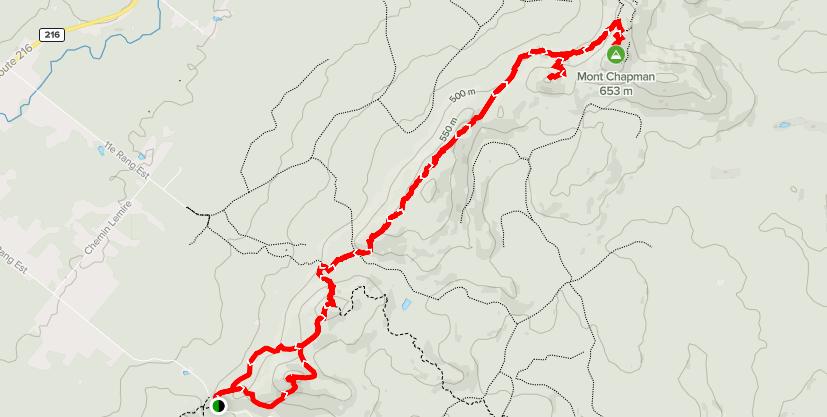

Stoke Mountains
8th May 2021

- Length: 18,97 km
- Positive elevation: 890 m
- Climax: 653 m
- Summit view: 180°
- Duration: 6 hours


The Stokes Mountains form a chain of mountains separate from the great Eastern Townships hiking trail. The geographical situation means that the region is little frequented by hikers, which offers excursions in peace and in a nature that does not have too many human traces, almost intact. Rare thing in Estrie...


The network of hiking trails in the Stokes Mountains is divided into three zones. The Chapman zone crosses the mountain ridge for about ten kilometers, providing views and points of interest: caves, cliffs, marshes, etc. If you attempt the crossing, the ridge path leads on a solitary path and in the heart of a wild forest. The Stoke zone extends over the southern part of the mountains, and the East Angus zone allows you to join La Vallée Heureuse du Mont-Élan while offering viewpoints and a pretty stream.


My hike was done at the beginning of May; the thaw period ending earlier than elsewhere in this region. A cloudy day with very few winds made the walk a bit more difficult than I expected due to a heavy atmosphere, especially in the dense, overgrown undergrowth.


The hike begins after an approach walk of a few meters at the end of Rang 10. Once on the trail, the tone is set: very rugged terrain punctuated by steep climbs and descents. The summits are unfortunately not up to the effort involved in the ascent, as there are few if any viewpoints.